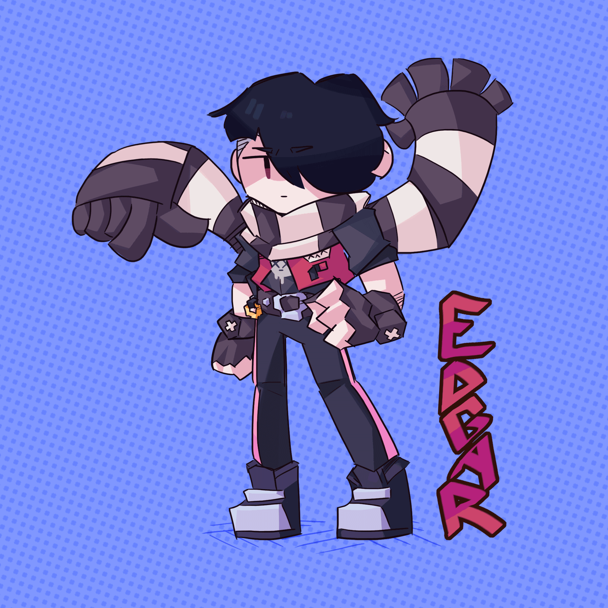

Edgar as a brawler was released in 2020 in the assassin class. His attack is a series of short-range punches and his super lets him jump/fly from one place on the map to another. Since his release, he appears to have been getting some mixed reception. People complain that he's too easy to play with, which is partially true imo. If you upgrade him to at least power 7, you can easily take out someone with three hits and it gets boring pretty fast. There's also a lot of players saying he shouldn't be able to jump, as it makes it too easy to get close to your opponent and ultimately defeat them. In fact, some think there shouldnt be a jumping superpower in any of the brawlers, because there's no way to cause damage to them while they're in the air, which is an unfair advantage and a valid criticism if you ask me (other brawlers that have a jumping super include: El Primo, Piper, Crow, Mico and Bonnie).

The majority of players, however, seem to be more upset about the type of people who play with Edgar, rather than the brawler himself. People who typically pick Edgar tend to be quite rude to other players and agressive during gameplay. There's apparently a big trend of Edgar players constanly using the thumbs down reaction in during the game, which comes off as rude and I totally get that, lol. That happened to me once and it was the most annoying thing in the world. Also, Edgar attracts a certain demographic that a lot of people aren't a fan of. He's typically picke by kids / preteens in their rebellious phase which usually just comes off as rude. I mean... just look at him.